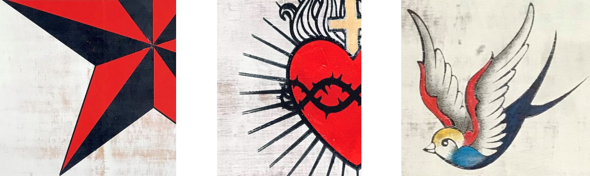

HOLD FAST: As part of the Cork Harbour Festival and in collaboration with Backwater Artists Group, studio member Seán Hanrahan presents a body of work in two of the cells, of the former Punishment Block in Spike Island. The work reflects on the maritime theme of tattoos, which are perhaps one of the most recognisable visual forms, when we think of the culture of sailors. Tattoos are also very much part of prison culture. The exhibition will reference popular images of tattoos, such as the nautical star, anchor and swallows and explore the correlation between both cultures, in relation to this theme.
HOLD FAST: Physically, the term Hold Fast means to bear down and fight through the storm, it also indicates a sailor’s career as a deckhand, by the tattoos on their hands of the same name.
Seán Hanrahan
Seán Hanrahan is a multidisciplinary artist based in Cork city, working in print, photography, installation & collaborative practice. My studio practice is at Backwater Artists Studio where I am also a board member. I have been a member of Cork Printmakers for 15 years, where I have worked on several projects & exhibited internationally.Backwater Artists Group
Established in 1990 by artists for artists, Backwater Artists Group provides high-quality, affordable studios with security of tenure, access to facilities and developmental support for over 70 visual artists. We ensure a stable, supportive working environment for artists and we are committed to ensuring that artists develop the skills needed to establish, expand and sustain their studio practice. Through our Studio 12 exhibition/project space, we support studio and non-studio artists and aim to increase collaboration and engagement with the wider artistic community and the general public through exhibitions and outreach events. The Backwater Artists Network (BAN) offers a shared city centre focal point and opportunities to connect for professional artists working in isolation from studios in their own homes or in single privately rented studios.Spike Island
Spike Island offers unique art venues within the prestigious heritage buildings whose history spans almost two centuries.